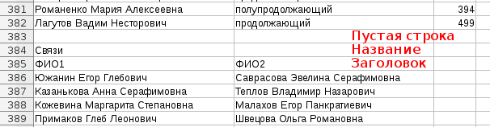

grmaster - tool for dividing students into groups
Copyright (C) 2015 Lutov V. S. <vslutov@yandex.ru>
This program is free software: you can redistribute it and/or modify
it under the terms of the GNU Affero General Public License as published by
the Free Software Foundation, either version 3 of the License, or
(at your option) any later version.
This program is distributed in the hope that it will be useful,
but WITHOUT ANY WARRANTY; without even the implied warranty of
MERCHANTABILITY or FITNESS FOR A PARTICULAR PURPOSE. See the
GNU Affero General Public License for more details.
You should have received a copy of the GNU Affero General Public License
along with this program. If not, see <http://www.gnu.org/licenses/>.
Программа grmaster предназначена для удобного и быстрого распределения
студентов первого курса на группы с учетом их пожеланий и уровня английского.
Домашняя страница проекта: https://github.com/vslutov/grmaster
Программа писалась для факультета ВМК и учитывает его специфику.
Если у вас другие требования для распределения, то меняйте код программы так, как вам нужно, в рамках соблюдения лицензии GNU AGPL. Подробнее о коде читайте в разделе для программистов.
В случае возникновения проблем, пишите автору: Владимир Лютов vslutov@yandex.ru.
Если не хотите заморачиваться с установкой - откройте эту ссылку http://lutov.net/grmaster и переходите к пункту использование.
Если вы по каким-то причинам, решили настроить свой сервер или запустить приложение из консоли, то все равно прочитайте раздел использование, а потом переходите в раздел для программистов.
Итак, перед вами интерфейс веб-сервера, который обрабатывает информацию, которую вы в него загрузите. Процесс автоматического распределения состоит из 4 шагов.
Рассмотрим этот процесс по шагам.
Нажмите кнопку Cкачать шаблон.
Шаблон - это табличный файл в формате .csv. Редактировать его удобно табличным редактором Microsoft Excel или LibreOffice Calc. Если у вас нет табличного редактора, можете бесплатно загрузить офисный пакет LibreOffice с сайта разработчика: https://www.libreoffice.org/download/libreoffice-fresh/.
Файл с информацией содержит (в порядке сверху-вниз):
grmaster.Настройки можно менять так, как вам нужно - программа сама подстроится под вас.
Доступные настройки:
stream_sizes - количество групп на потоке (набор чисел в разных столбцах
таблицы)english_header - название столбца, в котором находится информация об
уровне английского каждого студентаenglish_per_group - количество английских подгрупп в одной группеscore_header - название столбца с баллами студентаfriends_table - название таблицы со связями между студентами, которые
хотят учиться в одной группе (об устройстве таблицы смотри далее)stream_tables - названия таблиц со списком студентов, хотящих попасть
на каждый из потоковПример таблицы можно скачать вместе с исходным кодом. Файл называется example.csv.
В каждой таблице все столбцы должны быть подписаны в заголовке (первой строке после пустой строки).
Первый столбец в каждой таблице - это полное имя студента. Должно быть уникальным. Если на курсе есть полные тезки, снабдите их имена числовыми идентификаторами.
Для таблицы студентов желательно указать их суммарный или средний балл.
Студенты с одним уровнем английского должны иметь одинаковые значения в
поле english_header.
Все дополнительные таблицы должны отделяться от предыдущей ровно одной пустой строкой. У них должны быть название и заголовок.
Например: 
Поддерживаемые таблицы: - Таблица со списком пар студентов, которые хотят учиться в одной группе. - Таблицы со списком студентов, желающих попасть на первый, второй и третий потоки. Таблицы могут быть пустыми, но заголовки лучше бы были.
Заполните этот файл в соответсвии с вашими потребностями.
После того, как вы добавили в шаблон нужную информацию, сохраните его в формате
.csv (ВАЖНО: grmaster понимает только этот формат, не пытайтесь
загрузить .ods или .xlsx, ничего хорошего у вас не получится).
Загрузите готовую таблицу на сервер с помощью соответсвующего элемента интерфейса.
Скачайте результат.
Поздравляем! Вы получили очень хорошее распределение по группам для студентов первого курса. Возвращайтесь к нам через год и рекомендуйте это приложения своим знакомым с других факультетов.
Итак, grmaster - это приложение на чистом python 3. Просто несколько файлов
с расширением .py, объединенные в одну папку.
Есть два пути общения с вычислительным ядром программы.
grmaster предоставляет интуитивный интерфейс
grmaster help для справки.Установка предполагает несколько взаимозаменяющих вариантов в зависимости от того, чего вы хотите.
Установка с помощью Docker удобна, если вы говорите на русском и кроме веб-интерфейса на собственном сервере вам ничего не нужно.
docker pull vslutov/grmasterdocker run -d -p [номер порта]:8000 vslutov/grmasterУстановка из pypi удобна, если вам нужна обработка файлов в консоли или вы не хотите использовать docker.
pip install grmastergrmaster testУстановка из исходных кодов удобна, если вы хотите поменять настройки сервера (порт, на котором он работает или язык).
python setup.py develop или python setup.py installПросто переведите grmaster/data/index.en.html на ваш язык, сохраните в
формате index.LANG.html в ту же папку и поменяйте настройки в файле
grmaster/setting.py.
Сделайте, пожалуйста, после этого pull-request с переводом на github или напишите автору письмо vslutov@yandex.ru с приложенным переводом, чтобы вашими наработками могли пользоваться другие люди.
Посмотрите внимательно в файл grmaster/rules.py, там находятся
правила распределения. Меняйте текст программы так, как вам нужно и
делайте pull-request, я с радостью добавлю ваше улучшение в программу.
Хорошего вам дня!